My Interests :)

Reading:
One of my main hobbies is reading. I have loved to read ever since I was a child and enjoy almost every genre. I particularly like books that involve some level of science, philosophy, & mystery. Some of my favorite books are 'Scythe,' by Neal Shusterman; 'The Three-body Problem,' by Cixin Liu; & 'Wuthering Heights,' by Emily Bronte. I also love discussing books with others and reading new types of books, so please reach out if you want to talk!
Crochet:
I also enjoy crocheting, making things such as keychains, decorations, and clothing. I started crocheting at the age of ~7 and have continued the hobby ever since. During my senior year of high school, I participated in my school's winter market, where me and a friend hosted a stall. I sold many little crochet keychains and sold almost all of them.
Cooking & Baking:
Lastly, I love cooking and baking, especially different types of foods. My goal is to cook/bake something from every cuisine. I also really like making things from scratch, such as pasta and bread, and I make my own recipes using the Baker's Formula.